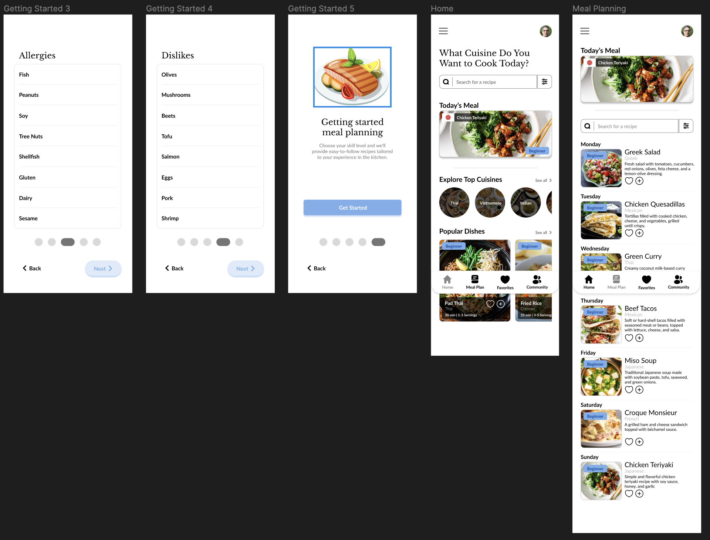

Meal Mentor is a class project for IMD 363,
this project involves the development of a meal planning app designed specifically for beginner cooks
interested in exploring and learning to cook dishes from various cuisines. The app aims to simplify the
process by providing curated meal plans, easy-to-follow recipes, and instructional content to empower
beginners on their culinary journey.
The Problem
What are we studying?
The problem addressed by this app is that beginner cooks often feel overwhelmed and lack guidance when
attempting to cook dishes from different cuisines due to unfamiliar ingredients, techniques, and
recipes. This app aims to provide a user-friendly solution by offering curated meal plans and
step-by-step instructions tailored to beginners' skill levels and introducing them to diverse culinary
experiences.
The Solution
Goals & Objectives
Provide a user-friendly platform that helps beginner cooks discover and explore diverse
cuisines from around the world.
Offer curated meal plans and recipes tailored to the skill level of beginners, guiding them
through the cooking process and helping them build confidence in the kitchen.
Persona
Ideation
Desining based off our research
Based off our research surrounding app/websites that were similar to the ones we created. We create
diagrams, flows, and wireframes off the problem we were trying to fix.
IA Diagram
User Flow Diagram
Wireframing
Testing + Improvements
Testing our designs
Testing the wireframe prototype, helped realize many flaws within the design. Some common issues were
having buttons being too small, location for a certain item was in the way, or not making the recipes
known for beginner cooks. In the final design the issues were fixed by adding labels to show the level
it takes to cook that meal, and increasing the size of the buttons so they were able to be pressed.
Final Mockup

Prototype Demo
OnBoarding
Meal Planning
Screens
Prototype
Conclusion + Lessons
What I would do differently next time...
I wish I would have done more iterating towards the end, so I could have had more time to furthur
develop my final design. Gaining feedback from others has helped me realize the flaws in my design.
Usability testing would have been nice, seeing if user could go from point A to point B without any
issues.
Here are the things I've learned:
ITERATE ITERATE ITERATE - Your first design isn't going to your best design.
You constantly need to test, gain feedback and redesign. It
might take hundreds of ideas or tries until you find something that works.
Information Architecture - This is my first time creating an IA diagram.
Creating a easy to follow diagram helps the team or user learn about the structure of the
design.
Designing visually - I tend to forget design follows the same principles of
art. Things like balance, constract, heirarchy are fundimentation when it comes to design.
Learning about Typography has also really helped me design visually.